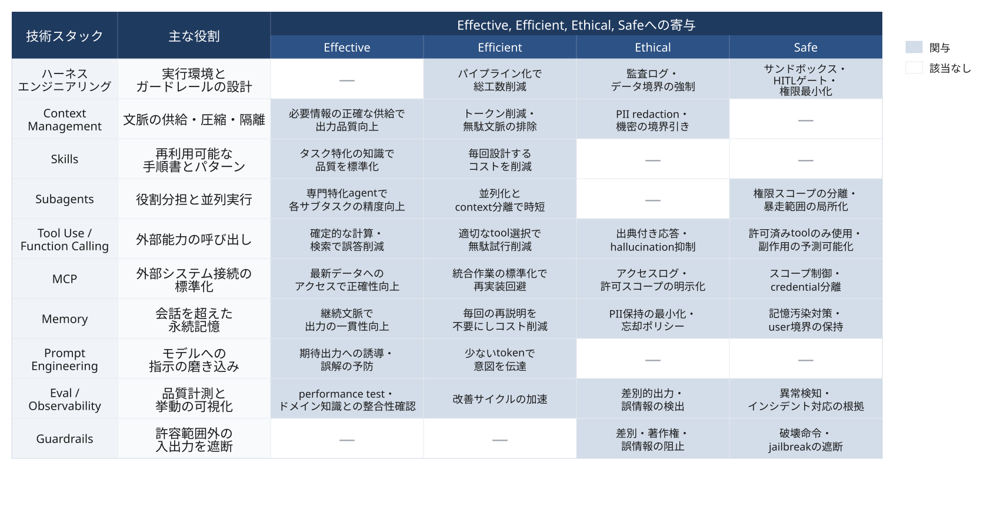

claude-code 101
2026年05月03日
regmonkey_index:
title_fontsize: 1.2em
bullet_fontsize: 0.9em
children:
- title: 1. 導入：AccessとFluencyのギャップ
description:
- "AIへのアクセスは入口でしかなく，Fluencyへの到達には4観点の運用判断が要る"
- "effective・efficient・ethical・safeを満たす状態を，個人技ではなくチームで再現できるかが軸"
width: [45,55]
- title: 2. 3つのインタラクション
description:
- "Automation・Augmentation・Agencyを段階で並べ，責任範囲・必要スキルを可視化する"
- "無自覚にAgencyへ滑り込む事故を防ぐため，いま自分がどの様式にいるかを意識する"
width: [45,55]
- title: 3. 4D Framework
description:
- "Delegation・Description・Discernment・Diligenceの4能力で，AI協働の質を底上げする"
- "4能力は独立ではなく相互に補完する関係"
width: [45,55]
- title: 4. Summary
description:
- "4D × 主原則 × 具体アクションの3列でスライド全体を俯瞰する"
- "実務に持ち帰れる「次の一手」をDごとに1つずつ抜き出せる構成"
width: [45,55]導入：AccessとFluencyのギャップ
AIとの関わり方：3つの様式
4D Framework
ツールへのアクセスはスタート地点で，4Dの能力で初めて成果に変わる
Access：AIに触れている状態
Fluency：AIで成果を出せる状態
AI Fluency（Dakan・Feller・Anthropic, 2025）
AIシステムとのやり取りを effective・efficient・ethical・safe な状態に保ち続けるために必要な，相互に絡み合った能力・知識・洞察・価値観の集合
record1:
観点: Effective
問い:
- 意図した成果に届いているか
ポイント:
- 目的に対して<span class="regmonkey-bold">出力が役に立っているか</span>を測れる
- 「らしい応答」と「正しい応答」を切り分ける
record2:
観点: Efficient
問い:
- 時間とコストに見合うか
ポイント:
- 自分でやったほうが速い領域を<span class="regmonkey-bold">見極める</span>
- トークン・レビュー時間を含めた総工数で判断
record3:
観点: Ethical
問い:
- 他者と社会への影響は許容できるか
ポイント:
- 著作権・誤情報・差別的出力を<span class="regmonkey-bold">事前に潰す</span>
- 顧客データ・個人情報の境界を引く
record4:
観点: Safe
問い:
- 自分とプロジェクトを守れているか
ポイント:
- 破壊的操作・本番反映の前にゲートを置く
- AI出力の最終責任は<span class="regmonkey-bold">人間にある</span>と認識する
導入：AccessとFluencyのギャップ
AIとの関わり方：3つの様式
4D Framework
Automation・Augmentation・Agencyを意識的に使い分ける
Automation
AIに作業を実行させる
Augmentation
AIと一緒に考える
Agency
AIを設定して任せる
導入：AccessとFluencyのギャップ
AIとの関わり方：3つの様式
4D Framework
Delegation・Description・Discernment・Diligenceは互いに支え合う
4D Framework
record1:
能力: ① Delegation
役割:
- 何をAIに任せるか決める
ポイント:
- ゴール設定と関わり方の選択を担う
- 「自分でやる・AIと組む・AIに任せる」の<span class="regmonkey-bold">切り分け</span>
record2:
能力: ② Description
役割:
- 意図を伝える
ポイント:
- 目的・制約・参考例を渡し，出力を<span class="regmonkey-bold">予測可能にする</span>
- 「良い例・悪い例」のセットで指示の解像度を上げる
record3:
能力: ③ Discernment
役割:
- 出力を見極める
ポイント:
- AIの出力と振る舞いを<span class="regmonkey-bold">批判的に評価</span>する
- 自分の知識量が評価精度の上限を決める
record4:
能力: ④ Diligence
役割:
- 責任を持って関わる
ポイント:
- Creation・Transparency・Deploymentの<span class="regmonkey-bold">3観点で倫理と安全を担保</span>
- 「AIが言った」は責任放棄の言い訳にならないProblem Awareness × Platform Awareness × Task Delegationを揃える
ドメイン知識とAI理解の両輪が判断の質を決める
regmonkey_index:
title_fontsize: 1.2em
bullet_fontsize: 0.9em
children:
- title: 1. Problem Awareness<br>（課題の認識）
description:
- "達成したいゴールと，そこに至るまでの<strong>作業の構造</strong>を言語化する"
- "「ドラフト作成・リサーチ・最終判断」のように分解できないと，任せる単位が決まらない"
width: [35,65]
- title: 2. Platform Awareness<br>（AIの能力認識）
description:
- "利用可能なAIシステムの<strong>得意領域・限界・運用コスト</strong>を把握する"
- "コーディングエージェント・チャットLLM・RAG・自律エージェントで適性が異なる"
width: [35,65]
- title: 3. Task Delegation<br>（戦略的な分配）
description:
- "<strong>判断・責任・戦略</strong>は人に残し，反復・展開・初稿生成をAIに渡す"
- "Automation・Augmentation・Agencyのどの様式で関わるかも併せて決める"
width: [35,65]抽象語ではなく要素分解で渡し，特に「悪い例」を添える
regmonkey_index:
title_fontsize: 1.2em
bullet_fontsize: 0.9em
children:
- title: 1. 目的
description:
- "AIが達成すべきゴールを1文で渡す"
- "例：「既存顧客の再購入促進」「休眠顧客の掘り起こし」"
width: [30,70]
- title: 2. 対象（ペルソナ）
description:
- "年齢・関心・購買履歴・課題を<strong>具体</strong>に書き下す"
- "「ユーザー」より「30代・育児中・時間不足が課題」のように粒度を上げる"
width: [30,70]
- title: 3. トーン
description:
- "「親しみやすいが過度にカジュアルではない」のようにブランド規範を渡す"
- "<strong>避ける表現</strong>の例も併せると逸脱が減る"
width: [30,70]
- title: 4. 構造的制約
description:
- "件名は何文字以内・本文は何ワード・CTAは1つ など出力フォーマットを枠で縛る"
- "枠を渡さないと、AIは「らしい長さ」に落ちる"
width: [30,70]
- title: 5. 成功基準
description:
- "開封率○％・CTR○％・コンバージョン○件 など定量で渡す"
- "評価軸を共有しないと品質判断が定まらない"
width: [30,70]
- title: 6. 参考例
description:
- "良い例と<strong>悪い例</strong>を対で提示する"
- "「こういうのはNG」の提示は、抽象的な指示よりはるかに効く"
width: [30,70]LLMの性能差以上に，ユーザーの評価能力差が品質を決める
regmonkey_index:
title_fontsize: 1.2em
bullet_fontsize: 0.9em
children:
- title: 1. Product Discernment<br>（出力の質）
description:
- "<strong>正確性・適切性・整合性・関連性</strong>の4軸で出力そのものを評価する"
- "「らしい応答」と「正しい応答」を切り分け，ハルシネーションを見抜く"
width: [35,65]
- title: 2. Process Discernment<br>（過程の妥当性）
description:
- "AIが<strong>どう推論したか</strong>を点検：論理飛躍・観点の抜け・不適切な前提を疑う"
- "結論が合って見えても，前提が誤っていれば下流で破綻する"
width: [35,65]
- title: 3. Performance Discernment<br>（Agent挙動の適切さ）
description:
- "対話中の<strong>コミュニケーション様式</strong>が自分の用途に合うかを評価する"
- "冗長・追従的・断定的な応答は，協働の質を下げる兆候として扱う"
width: [35,65]Creation・Transparency・Deploymentで倫理と安全を担保する
他の3DはEffective・Efficient，DiligenceはEthical・Safeを担う
regmonkey_index:
title_fontsize: 1.1em
bullet_fontsize: 0.9em
children:
- title: 1. Creation Diligence<br>（協働の入り口）
description:
- "<strong>どのAIシステムを使い・どう関わるか</strong>を意図的に選ぶ"
- "用途・データ感度・能力特性に合わせ，モデル・契約・運用ラインを使い分ける"
- "<strong>悪い例</strong>：機密データを無償汎用LLMに貼る → 学習データ化と情報流出のリスク"
width: [30,70]
- title: 2. Transparency Diligence<br>（協働の見える化）
description:
- "AIが関与した事実を<strong>知る必要のある人すべて</strong>に開示する"
- "個人・学術・業務など文脈ごとに開示の粒度と検証の期待値は異なる"
- "<strong>悪い例</strong>：個人で使い黙って成果物に統合 → 後追いで疑念が走り信頼が崩れる"
width: [30,70]
- title: 3. Deployment Diligence<br>（協働の出口）
description:
- "共有・公開する出力は<strong>自分で検証し保証する</strong>責任を引き受ける"
- "正確性・著作権・引用元を確認してから配信判断する"
- "<strong>悪い例</strong>：誤情報をそのまま発信 → 「AIが言った」は責任放棄の言い訳にならない"
width: [30,70]record1:
category: Delegation
rule:
- <span class="regmonkey-bold">Problem・Platform・Task</span>の3観点で任せ方を決める
actions:
- Problem Awareness：ゴールと作業の構造を言語化する
- Platform Awareness：AIシステムの得手不得手を把握する
- Task Delegation：判断・責任・戦略は人，反復・展開はAIに渡す
record2:
category: Description
rule:
- <span class="regmonkey-bold">6つの要素</span>に分解して指示する
actions:
- 目的・対象・トーン・制約・成功基準・参考例を渡す
- 「悪い例」を必ず添える
- 抽象指示と具体例の両方を併走させる
record3:
category: Discernment
rule:
- <span class="regmonkey-bold">自分の知識量</span>が評価精度の上限を決める
actions:
- 既知領域では誤りを即時に見抜く
- 未知領域では教科書・1次資料で裏取り
- 固有名詞・数値・年代は幻覚を疑う
record4:
category: Diligence
rule:
- <span class="regmonkey-bold">Creation・Transparency・Deployment</span>の3観点で責任を担保する
actions:
- Creation：用途とデータ感度に合うAIシステムを選ぶ
- Transparency：AI関与の事実を知る必要のある人に開示する
- Deployment：共有・公開する出力は自分で検証し保証するプロジェクト選定→ビジョン化→分担設計の3段で精度を積む
3段は次の入力を作るための連続作業
Step 1
題材を1つ選定する
Step 2
成功条件を言語化する
Step 3
タスク分解と分担を決める
明確に「伝える」3軸と正しく「見極める」3軸を反復で噛み合わせる増幅装置
ループの本質：対の3軸を同時に鍛える
record1:
観点: Product
Description（伝える）:
- フォーマット・スタイル・長さ・詳細度を<span class="regmonkey-bold">具体化</span>
- 例：「2,000字・見出し3つ・結論を冒頭」
Discernment（見極める）:
- 要件充足・<span class="regmonkey-bold">正確性・有用性</span>を点検
- 出力そのものの質を直接評価する
record2:
観点: Process
Description（伝える）:
- フレームワーク・参照方法論・<span class="regmonkey-bold">踏むべき手順</span>を指定
- 例：「前提整理 → 反対意見 → 統合的結論」
Discernment（見極める）:
- 指示した手順を踏んだか・<span class="regmonkey-bold">論理は妥当か</span>
- 観点の抜け・前提の不適切を疑う
record3:
観点: Performance
Description（伝える）:
- 簡潔か詳細か・挑戦的か支援的かなど<span class="regmonkey-bold">スタンス</span>を指定
- 例：「同意せず弱点を積極的に指摘して」
Discernment（見極める）:
- 詳しすぎ・<span class="regmonkey-bold">迎合的すぎ</span>でないか
- 必要な反論をしてくれたかを評価するDescribe → AI生成 → Discern → Refine → Integrate を，一往復で終わらせず満足するまで回す
① 入力
Describe
② 生成
AI生成
③ 評価
Discern
④ 調整
Refine
⑤ 統合
Integrate
反復が前提：一往復で完結させない
Regmonkey Presentation. ©Ryo Nakagami. All rights reserved.